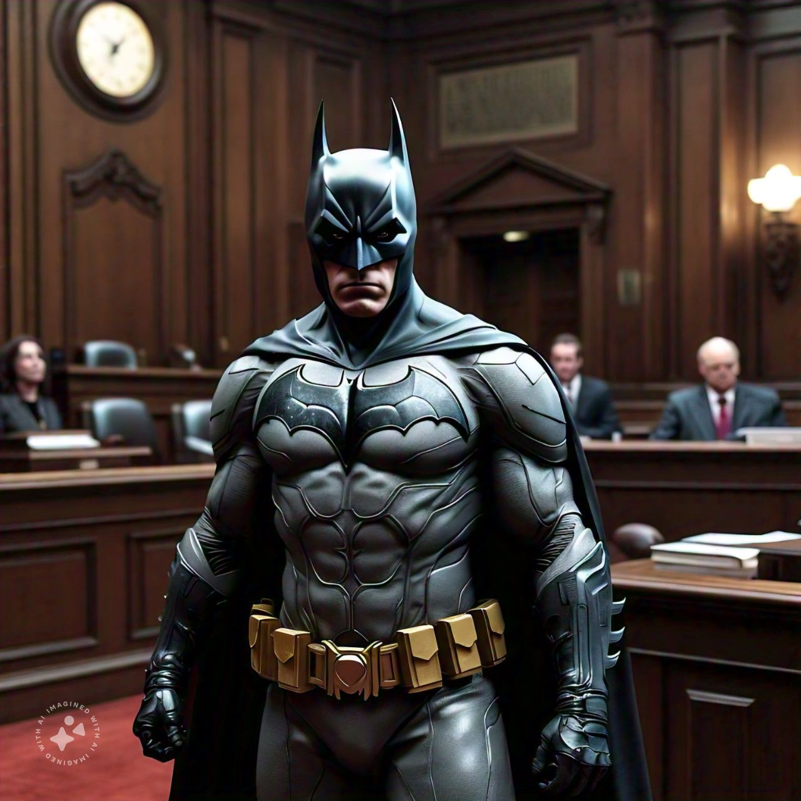

"Welcome to Gotham’s Dark Knight HQ - Uncover the Legend, Embrace the Mission."
About Batman
 Click the image...
- Origin Story
- "Discover the journey of Bruce Wayne from tragedy to Gotham’s silent guardian."
- Brief on his childhood, the tragic loss of his parents, and his transformation into Batman.
- Mission Statement
- "Protecting Gotham City from the shadows, one villain at a time."
- Emphasis on his dedication to justice and fighting crime without powers.
Allies and Rivals
- Key Allies
- Alfred Pennyworth: Loyal butler, confidante, and Batman's moral compass.
- Commissioner Gordon: Batman’s trusted ally within the Gotham Police.
- The Bat-Family: Short bios on Robin, Nightwing, Batgirl, and others who assist him.
- Iconic Villains:
- Joker: Batman’s ultimate nemesis, embodying chaos.
- Two-Face, Riddler, Catwoman: Key rival profiles with background stories.
Gadgets and Vehicles
- Utility Belt: Details of classic gadgets like the Batarang, grappling hook, and smoke bombs.
- Batmobile: Brief history and key features of his iconic vehicle.
- Batcave: Description of his secret lair, high-tech gear, and security systems.
Gotham City
- Map of Gotham: Interactive map with points of interest, such as Arkham Asylum, Wayne Tower, and Crime Alley.
- Gotham’s Dark History: Stories and legends of the city that shaped Batman's mission.
Training and Skills
- Martial Arts Mastery: Overview of his fighting styles and physical conditioning.
- Detective Skills: Explanation of his role as “The World’s Greatest Detective.”
- Intelligence and Strategy: How he leverages his intellect to stay a step ahead of enemies.
Contact Batman
- Anonymous Tip Submission: A secure form for “citizens” to report any “suspicious activities” or Gotham City news.
- Newsletter Signup: "Stay updated on Gotham’s latest missions and Batman’s watchful activities."
- Click here you will get help...